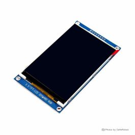
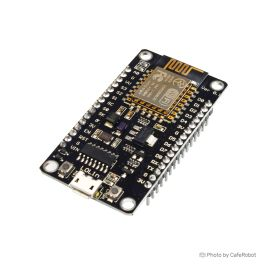

سختافزارهای مورد استفاده

ماژول نمایشگر TFT تمام رنگ 3.5 اینچ SPI
SKU: LCD-01-180نمایشگر با ابعاد ۳.۵ اینچ و رزولوشن ۴۸۰×۳۲۰ با درایور ILI9486L، مجهز به پینهدر تکردیفه ۸ پین با رابط پرسرعت ۴ سیمه SPI و درگاه کارت حافظه Micro-SD.
- رزولوشن تصویر 480 x 320 (HVGA)
- تراشه درایور LCD ILI9486L / ILI9488
- پروتکل ارتباطی 4-Wire High Speed SPI
- فرمت رنگ SPI 18-Bit (3 Bytes/Pixel RGB666)
- ولتاژ کاری منطقی 3.3V Logic Level

برد توسعه NodeMCU ESP8266 (CH340)
SKU: COM-03-009برد مجهز به ماژول ESP-12E با پردازنده ۳۲ بیتی تنسیلیکا، حافظه فلش ۴ مگابایت، ارتباط وایفای داخلی و رابط سریال CH340.
- پردازنده مرکزی Xtensa LX106 @ 80/160 MHz
- حافظه فلش 4 MB SPI Flash
- گذرگاه سختافزاری SPI HSPI (D5=CLK, D7=MOSI)
- مبدل سریال به USB CH340G
- سطح منطقی پایهها 3.3V (کاملاً سازگار با LCD)
جدول تطبیق اتصالات کانکتور ۸ پین (Wiring Pinout)
| شماره | پین ماژول ۳.۵ اینچ (8-Pin) | پین برد NodeMCU | شماره GPIO | نوع سیگنال | شرح عملکرد اتصال |
|---|---|---|---|---|---|
| ۱ | GND | GND | - | GROUND (0V) | اتصال مشترک زمین مدار |
| ۲ | VCC | 3V3 (یا VIN 5V) | - | POWER (+3.3V) | تغذیه مدار منطقی نمایشگر |
| ۳ | SCL | D5 | GPIO14 |
HSPI SCK | سیگنال کلاک همگامساز گذرگاه SPI (کلاک کاری تا ۴۰ مگاهرتز) |
| ۴ | SDA | D7 | GPIO13 |
HSPI MOSI | خط ارسال بستههای دیتای تصویر از پردازنده به نمایشگر |
| ۵ | RES | D0 (یا RST) | GPIO16 |
RESET | پایه ریست سختافزاری نمایشگر در آغاز راهاندازی |
| ۶ | DC | D1 | GPIO5 |
DATA / COMMAND | انتخاب بین ارسال دستورات رجیستری (LOW) یا دیتای تصویر (HIGH) |
| ۷ | CS | D8 | GPIO15 |
CHIP SELECT | فعالساز تراشه (Active Low - سازگار با پولداون بوت ESP8266) |
| ۸ | BLK | 3V3 (یا D2) | GPIO4 |
BACKLIGHT | نور پسزمینه (اتصال به ۳.۳V دائم یا D2 جهت دیمر کردن با PWM) |
ILI9486_SPI.h موجود در پروژه، تبدیل رنگهای ۱۶ بیتی مرسوم آردوینو (RGB565) به ۳ بایت به صورت شتابیافته انجام میشود تا رنگها بدون اعوجاج، کاملاً شفاف و با کنتراست عالی ظاهر شوند.
شبیهساز زنده صفحات دمو (Virtual 480x320 Display Simulator)
صفحات آزمون کد آردوینو را به صورت زنده در کادر شبیهسازیشده ۴۸۰ در ۳۲۰ پیکسل زیر مشاهده کنید (یا در مانیتور سریال آردوینو اعداد ۱ تا ۵ را تایپ کنید):
مراحل گامبهگام اجرای پروژه (Step-by-Step Lab Protocol)
سیمبندی پینهای کانکتور ۸ تایی
طبق جدول اتصالات بالا، پایههای GND و VCC را به زمین و 3V3 برد وصل کنید. سپس پایههای کلاک (SCL -> D5) و دیتا (SDA -> D7) را متصل نمایید. در انتها خطوط کنترلی RES (D0)، DC (D1) و CS (D8) را وصل کرده و پین BLK را برای روشن شدن بکلایت به 3V3 متصل نمایید.
نصب کتابخانه گرافیکی Adafruit GFX
در محیط Arduino IDE از منوی Sketch > Include Library > Manage Libraries... کتابخانه رسمی Adafruit GFX Library را جستجو و نصب فرمایید. درایور اختصاصی ILI9486_SPI.h قبلاً در پوشه پروژه ذخیره شده و نیازی به نصب دیگری نیست.
تنظیمات برد و فرکانس ۱۶۰ مگاهرتز در منوی Tools
برد را روی NodeMCU 1.0 (ESP-12E Module) و فرکانس کاری CPU را روی 160 MHz بگذارید. انتخاب فرکانس ۱۶۰ مگاهرتز سرعت انتقال بایتها در گذرگاه SPI را دو برابر کرده و رفرش ریت بسیار روانی روی رزولوشن ۴۸۰×۳۲۰ ایجاد میکند.
آپلود برنامه و کنترل از طریق Serial Monitor
اسکتچ را آپلود کنید. صفحات دمو به صورت اتوماتیک هر ۶ ثانیه ورق میخورند. با باز کردن پنجره Serial Monitor با باودریت 115200، میتوانید با تایپ کاراکترهای '1' تا '5' بلافاصله به صفحه مورد نظر پرش فرمایید.
کد کامل اسکتچ تست (Arduino Test Sketch)
/**********************************************************************************
* پروژه تست و راهاندازی نمایشگر ۳.۵ اینچ TFT تمامرنگ SPI با درایور ILI9486L و NodeMCU ESP8266
*
* سختافزارهای مورد استفاده:
* 1. ماژول نمایشگر TFT تمام رنگ 3.5 اینچ SPI با درایور ILI9486L (کد: LCD-01-180)
* 2. برد توسعه NodeMcu دارای هسته وایفای ESP8266 (کد: COM-03-009)
*
* اتصالات پینها (Wiring Pinout - 8 Pin Header):
* GND -> GND | VCC -> 3V3 | SCL -> D5 (GPIO14) | SDA -> D7 (GPIO13)
* RES -> D0 | DC -> D1 | CS -> D8 (GPIO15) | BLK -> 3V3 (Backlight)
**********************************************************************************/
#include <SPI.h>
#include <Adafruit_GFX.h>
#include "ILI9486_SPI.h"
#define TFT_CS D8 // GPIO15
#define TFT_DC D1 // GPIO5
#define TFT_RST D0 // GPIO16
#define TFT_BLK D2 // GPIO4 (یا اتصال مستقیم به 3V3)
ILI9486_SPI tft = ILI9486_SPI(TFT_CS, TFT_DC, TFT_RST);
unsigned long lastSwitchTime = 0;
int currentDemoPage = 0;
void setup() {
Serial.begin(115200);
tft.begin(40000000); // 40 MHz SPI Clock
tft.setRotation(1); // Landscape 480x320
Serial.println(F("ILI9486L Display Initialized!"));
drawSystemSpecsPage();
lastSwitchTime = millis();
}
void loop() {
if (Serial.available() > 0) {
char ch = Serial.read();
if (ch >= '1' && ch <= '5') {
currentDemoPage = ch - '1';
renderCurrentPage();
lastSwitchTime = millis();
}
}
if (millis() - lastSwitchTime >= 6000) {
currentDemoPage = (currentDemoPage + 1) % 5;
renderCurrentPage();
lastSwitchTime = millis();
}
delay(20);
}راهنمای عیبیابی و پرسشهای متداول (Troubleshooting)
۱. سیمهای SCL (D5) و SDA (D7) را بررسی کنید تا مطمئن شوید کلاک و دیتا برقرار است.
۲. پین DC (D1) و CS (D8) را کنترل کنید.
۳. پین RES را به جای D0 مستقیماً به پایه RST برد نودامسییو متصل کنید تا همراه با پردازنده ریست سختافزاری شود.
ILI9486_SPI.h)، دادهها به صورت خودکار به فرمت ۳ بایت تفکیک میشوند و این مشکل به طور کامل برطرف میگردد.
Tools > CPU Frequency فرکانس کاری نودامسییو را روی ۱۶۰ مگاهرتز بگذارید. همچنین در تابع begin(40000000) کلاک SPI روی ۴۰ مگاهرتز تنظیم شده است که حداکثر سرعت باس سختافزاری HSPI در ESP8266 است.